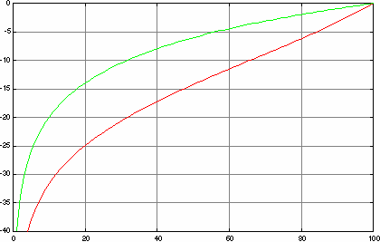
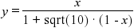

This technique compensates for non-natural linear mixer controls of cheap sound devices and give the volume bar of PM123 a reasonable characteristic.
You should not use this plug-in if your sound card already has a mixer with a logarithmic characteristic. You may check what kind of device you have with a simple test: turn PM123's volume slider from maximum down to 50% while playing. If the volume decreases only a bit, you have a linear control and you should activate this plug-in.
Response of the PM123 volume control
X-axis: relative position of the volume slider [%]
Y-axis: gain [dB]
The red line is the response function
with the correction.
The green line is the response function
of cheap sound devices without this correction.
Instead of an exponential function the plug-in uses the polynomial:

with x and y in the range [0,1] for the transformation. This gives an
approximately exponential function with a usable dynamic range of
almost 30 dB while keeping the zero point at -∞ dB.